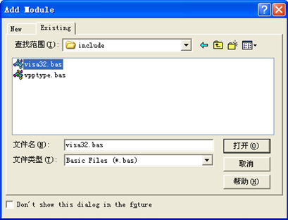
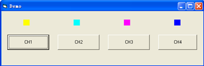

Visual Basic 6.0 编程实例
进入Visual Basic 6.0编程环境，按照下列步骤操作：
1. 建立一个标准应用程序工程（Standard EXE）。
2. 打开Project→Add Module的Existing选项卡，找到之前NI-VISA安装路径下的include文件夹中的visa32.bas文件并添加。

3. 在Demo中添加如下四个按钮，分别代表CH1～CH4。添加四个Label：Label1(0)，Label1(1)，Label1(2)，Label1(3)，分别显示CH1～CH4的状态（打开时显示通道的颜色，关闭时显示成灰色）。如下图所示：

4. 打开Project→Project1 Properties中的General选项卡，在Startup Object下拉框中选择Form1。
5. 双击CH1按钮进入编程环境，添加如下代码，即可实现对CH1～CH4的控制。以下为CH1的代码，其他通道代码类似。
Dim defrm As Long
Dim vi As Long
Dim strRes As String * 200
Dim list As Long
Dim nmatches As Long
Dim matches As String * 200 '保留获取设备号
Dim s32Disp As Integer
' 获得visa的usb资源
Call viOpenDefaultRM(defrm)
Call viFindRsrc(defrm, "USB?*", list, nmatches, matches)
' 打开设备
Call viOpen(defrm, matches, 0, 0, vi)
' 发送询问CH1状态命令
Call viVPrintf(vi, ":CHAN1:DISP?" + Chr$(10), 0)
' 获取CH1状态
Call viVScanf(vi, "%t", strRes)
s32Disp = CInt(strRes)
If (s32Disp = 1) Then
' 发送设置命令
Call viVPrintf(vi, ":CHAN1:DISP 0" + Chr$(10), 0)
Label1(0).ForeColor = &H808080 '灰色
Else
Call viVPrintf(vi, ":CHAN1:DISP 1" + Chr$(10), 0)
Label1(0).ForeColor = &HFFFF& '黄色
End If
' 关闭资源
Call viClose(vi)
Call viClose(defrm)
6. 保存、运行整个工程，可得到demo的单个可执行程序。当示波器与PC成功相连时，可实现对任意一个通道的开/关控制。